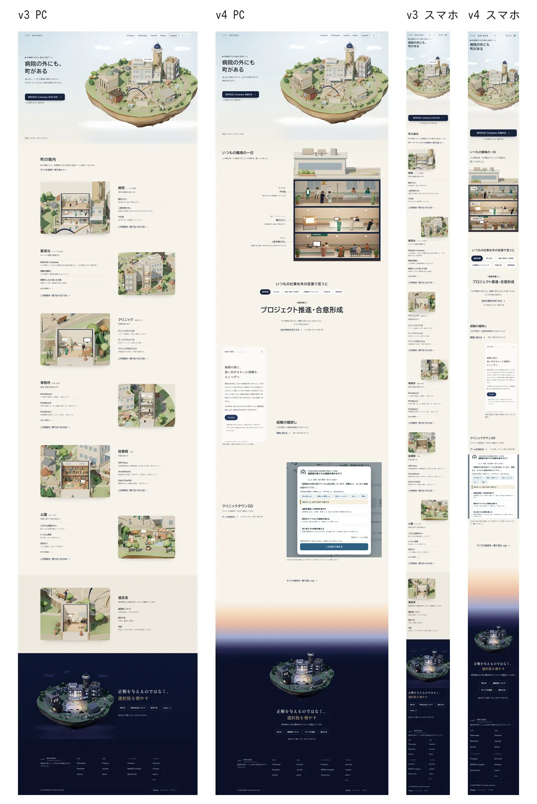
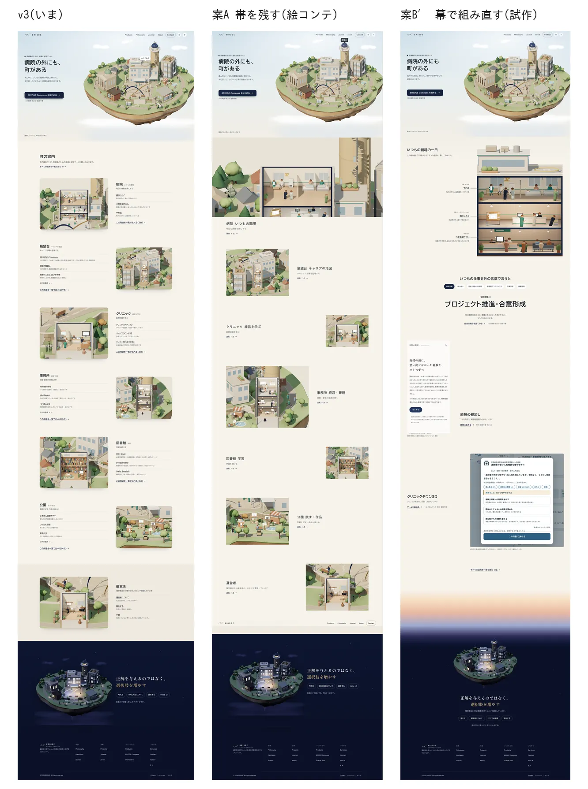
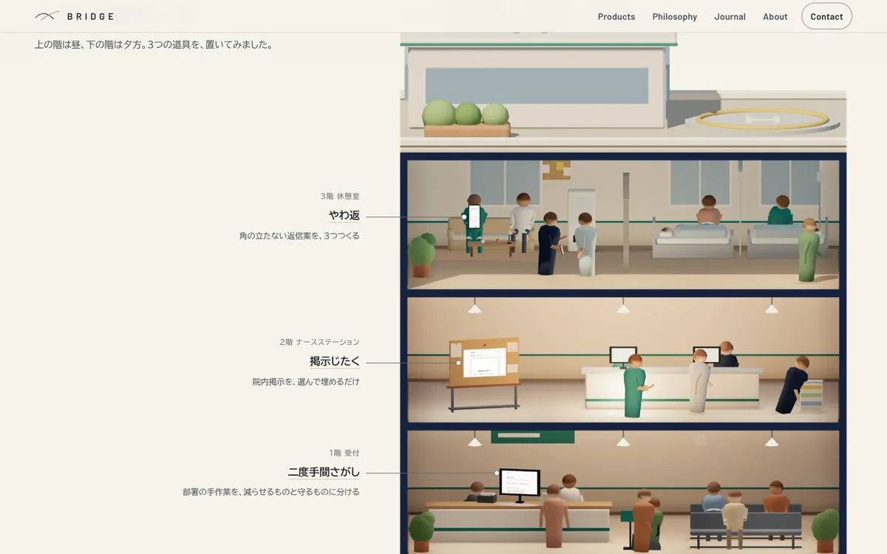
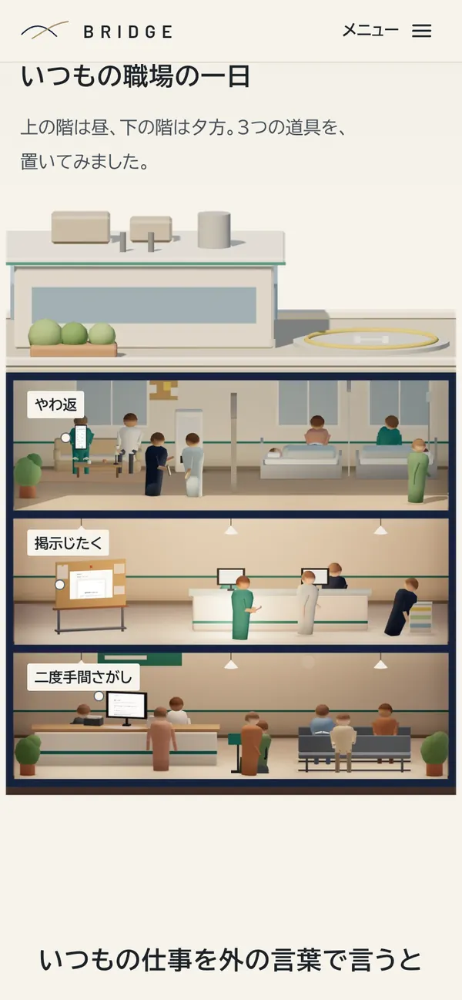
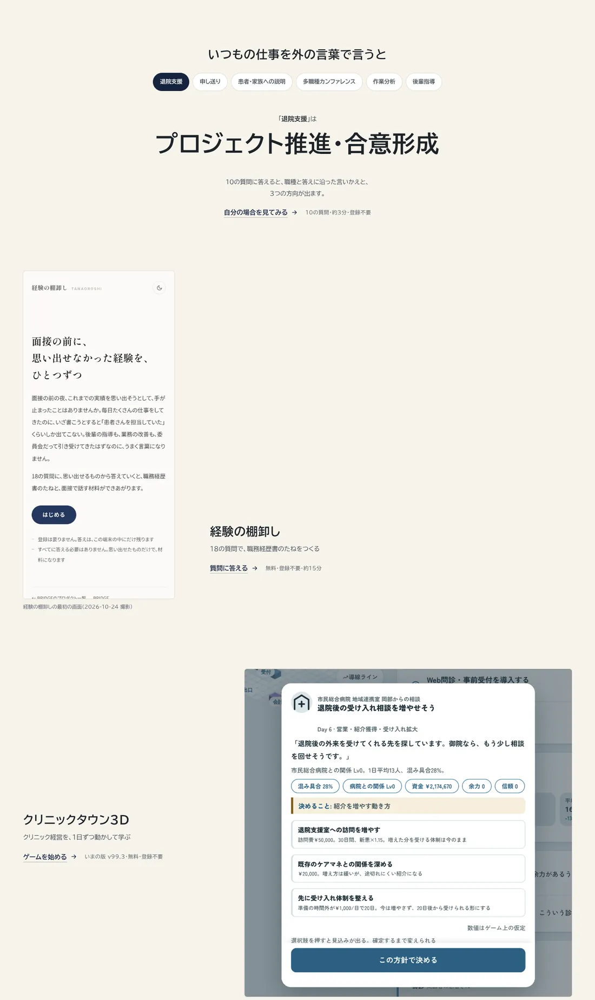
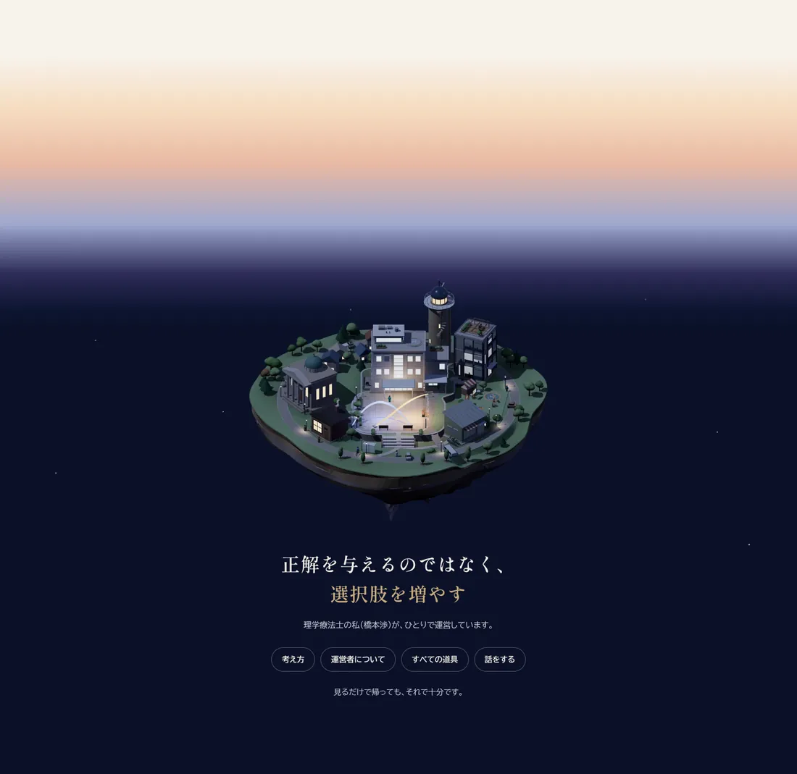
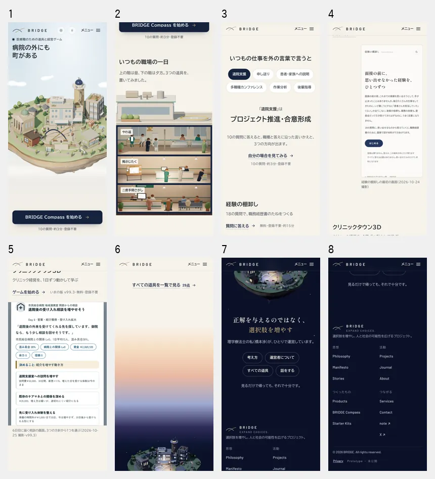

PR168 ・ トップの試作 ・ 本番には出していません(noindex)
ひらく町 v4 — トップページ全体の再構成
最初の画面(町)の見た目はそのままに、その下を「建物ごとに同じ形の帯を縦に繰り返す」構成から、幕ごとに構図・縮尺・密度・視点の変わる流れに組み直しました。町の俯瞰 → 病院の正面の断面 → 言いかえ(触れる一場面)→ 道具の実際の画面2つ → 夕から夜の空と遠くの夜の島。29の道具すべてへは、町のパネルと Products から届きます。
v4 を開くv3(いま)を開く第2幕を昼の1枚で見る(比べる版)
1. 新旧の全ページ(縮めて1枚で)
v3 は、最初の大きな町と最後の夜の町の間を、同じ骨組みの帯が7本埋めていました(ページの長さの約65%)。v4 は、隣り合う幕の形が毎回違います。スマホのページは v3 より約1画面短くなりました。

2. 帯を残す案と、組み直す案の比較
designer が、帯を残す案(A)と幕で組み直す案(B′)を同じ縮尺で比べ、B′ を推奨しました。A は帯の大きさや余白を変えても「建物の数だけ同じ骨組み」が残り、最初の画面と下の体験の差という課題を解きません。

| 軸 | 案A 帯を残す | 案B′ 幕で組み直す(推奨・試作) |
|---|---|---|
| 縮めて1枚で見たリズム | 町 → 同じ骨組みの帯×7 → 夜。山は最初と最後の2つ | 町 → 断面 → 言いかえ → 縦長の画面 → 正方形の画面 → 夜。隣り合う幕の形が毎回違う |
| 没入の続き方 | 最初の帯で索引に変わる | 町の病院を図面でひらき、その仕事を外の言葉にし、実際の画面へ寄り、夜の町へ引く |
| 29の道具への到達 | 本文に29件(JS なしでも届く) | 町のパネルの29件と Products。JS なしは建物の行き先を Products の用途の節にし、29件の一覧を noscript に |
| 下の画像 | 14枚(帯13+夜1) | 4枚(断面・棚卸し・クリニックタウン3D・夜の島。すべて遅延読み込み) |
| 保守(道具が1つ増えたら) | PRODUCTS・TOOLS・帯の行・帯の件数・29 の5〜6か所 | PRODUCTS・TOOLS・noscript の1行・29 の4か所 |
3. 新しいページの構成
- 第1幕 町との出会い いまの最初の画面の見た目のまま(立体・動く・訪問者の時刻)。文言は編集長の照合で4か所(上の小さな一行・見出し・一文・ボタン)を直し、JS なしで建物を押したときの行き先を Products の用途の節・考え方・運営者にした。下の端の色から紙へ、線や帯を置かずにつなぐ。
- 第2幕 いつもの職場の一日 病院を正面から切った断面の止めた絵(図面の視点・静か)。3階は昼、2階と1階は夕方の光。3つの道具の札。
- 言いかえ 「いつもの仕事を外の言葉で言うと」。6つの仕事から選ぶと、言いかえが大きく入れ替わる(ページの中で触れられる唯一の体験)。
- 第3幕 道具との出会い 経験の棚卸し(縦長の画面を左に大きく)と、クリニックタウン3D(6日目の相談の画面を正方形で右に)。押すと、その画面が広がって道具になる。続けて「すべての道具を一覧で見る 29点」。
- 終幕 夜の町 紙から夕、夜へ移る止まった空。遠くに夜の島。明朝の一文、運営者の一行、出口4つ、「見るだけで帰っても、それで十分です。」
4. 最初の画面のほかの見せ場
第2幕 いつもの職場の一日(病院の断面)
町の立体から、病院を正面から切った断面を撮りました(主棟だけ・前の壁を外し屋根は残す)。最初の町が引きの俯瞰なら、ここは正面の立面図です。中の人は時刻で入れ替わる本物のシミュレーションで、3階は昼、2階と1階は夕方の光を継ぎました(比べるための昼の1枚は、上の「第2幕を昼の1枚で見る」から)。札は道具の名前と Products の一行だけで、導入先や効果は書いていません。


言いかえ(触れる一場面)と、道具の実際の画面
言いかえは、第2幕の「いつもの仕事」を外の言葉へ渡す一場面です。道具は本番トップの代表作の2つに絞り、形の違う実際の画面を大きく見せます(加工しない。切り出しだけ)。クリニックタウン3D は、ゲームを実際に6日目まで進めて撮りました。

終幕 夜の町
第3幕のあと、紙から夕方、夜へ移る空を止まったまま見せ、遠くに夜の島を置きました。下の幕で夜になるのはここだけです(夜の時刻に開いたときは、最初の画面の町も夜です)。文字はすべて夜の単色の上に置いています。

5. スマホのスクロール体験
スマホでは、第2幕の札を断面の各部屋の左上に置き(道具名だけ)、文字だけの面が2つ続かないようにしました。画面を止めて場面を送る演出や、スクロールの乗っ取りはしていません。

6. 性能とアクセシビリティ
Chromium で端末を模した計測(画面・画素比・タッチ・CPU の減速)。このコンテナには GPU と Safari(WebKit)がなく、描画はソフトウェア。時間は参考値で、回ごと・時刻ごとのばらつきが大きい(同じ v3・同じ手順でも、PC の立体に替わるまでが 4.0秒の回と 6.1秒の回があった)。そこで時間は、v3 と v4 を交互に同じ条件で測った。実機(iPhone の Safari・Android の Chrome)では未計測です。
| 項目 | v3 | v4 | 備考 |
|---|---|---|---|
| スマホが最初に読む量(立体に替わる前・HTML を含む) | 403KB | 436KB | 増えたのは画面の下の遅延読み込みの絵(ページが短くなり、第2幕の絵が Chrome の先読みの距離に入る)。棚卸しの画面はスマホ用に小さい版にした |
| PC が最初に読む量(画素比2) | 655KB | 641KB | |
| あとで読む量(three.js など) | 1,158KB | 1,116KB | |
| 最後までスクロールして読む総量(スマホ) | 2,588KB | 2,463KB | 下の絵は14枚から4枚に |
| 立体に替わるまで(スマホ 390×844・画素比3 / PC 1440×900・画素比2。交互に3回) | 2.6〜3.2秒 / 3.6〜4.3秒 | 2.7〜2.9秒 / 3.4〜3.7秒 | 差は回ごとのばらつきの内(前に書いた PC 4.1 → 4.2秒も同じ)。BRIEF 11.9 の v3 の値(スマホ 3.5〜4.5秒・PC 4.7〜5.6秒)は、v3 の作業中の別の時刻の回の範囲で、今回の測り直しとは時刻が違う |
| 読み込み中の長いタスクの最大(スマホ。CPU 等倍 / 3倍 / 6倍) | 0.69 / 0.79〜0.80 / 0.90秒 | 0.61 / 0.71〜0.77 / 0.86秒 | 立体に替わって 1.5秒までの間。中身は立体の最初のこま(シェーダーの準備)で、v3 と同じ |
| スクロール中の長いタスクの最大(スマホ・CPU 等倍・2回) | 0.26・2.30秒 | 0.24・0.80秒 | 回ごとのばらつきが大きい |
| 同(CPU 3倍・5回) | 0.30〜1.11秒 | 0.97〜2.03秒 | 中身は、立体に替わって約2秒後に建物の中の形(interiors.js)を受け取り、公園の中を組む1こま(新しい材質の準備と画像の転送)。v3 にも同じこまがある(同じ手順のトレースで v3 0.86秒・v4 0.84〜1.01秒、別の回では v3 0.24秒・v4 1.34秒)。v4 で長い回が多い理由は特定できていない(候補: 同じ時間帯に下の幕の大きな絵の描画が重なる)。立体が落ち着いてから(8秒待って)スクロールすると v3 0件・v4 1件(0.07秒) |
| 同(CPU 6倍・2回) | 0.32・1.06秒 | 0.33・1.01秒 | 回によって大小が入れ替わる |
| レイアウトのずれ(CLS) | — | 0.0015以下 | 画像はすべて width と height あり |
| 町の描画(回数・三角形・GPU のテクスチャ) | 28回・9.1万・16.3/61.7MB | 同じ | 町は変えていない |
アクセシビリティ・JS なし・WebGL なし
- キーボードの順は読む順(第2幕の札 → 言いかえ → 第3幕 → 終幕 → フッター)。フォーカスの輪は紙の上で藍、夜の上で生成り
- 押せるものは 44px 以上(第2幕の札: PC は 44px、スマホは当たり判定 44px)
- 文字のコントラストは紙と夜で 4.5:1 以上(夜の時刻は、第2幕の見出しを夜から紙へ移る帯の下へ下げて直した)
- 動きを減らす設定: 言いかえの下線も、画面が広がる動きも止まる。町は止めた画像
- JS なし: 建物の行き先は Products の用途の節・考え方・運営者。29件の一覧を出す(Products の29件と一致)
- WebGL なし: 町のパネル(止めた断面の画像)から29件すべてへ
- 320〜1920px で横にはみ出さない
検証
- 現場
- 見直し3回(毎回、縮めた1枚でリズムを確かめた)。3回目は 320・375・1024・1920px、夕と夜の時刻、動きを減らす設定、JS なしを確かめた
- Designer
- 帯を残す案と組み直す案を比べ、組み直す案を推奨。第1回の指摘(CT3D の灰色の面、中盤の軽さ、スマホで文字の面が2つ続く、夜の見出しの帯)をすべて直し、第2回で見た目は合格。QA の直しのあとの見た目は現場だけが確かめた(designer の再確認はしていない)
- Editor
- トップの文言を最初の画面から通して照合し、12か所を直した(見出しの読点、最初の画面の一文が読む人の職場を病院と決めつけない形に、第2幕のリードを絵の説明の範囲に、29点 など)
- QA
- 10項目のうち8項目が合格。不合格の3件(PC の札の高さ 40px、夜の時刻の第2幕のコントラスト、第3幕の画面が広がらずに縮む)と注意の3件は直し、直したあとは現場が同じ検査で確かめた(qa の再実行はしていない)
- PM
- 総合判定は保留(試作として社長に見せてよい。技術と規定の面で止める理由はない)。第34条の照合: 写しは加工していない(第3幕は切り出しと縮小だけ。第2幕の3つの道具の画面の画素は、撮った絵と一致)。v3 から増えた規定の外れは2つ(終幕の空、第2幕の上の端のもやから紙へのグラデーション)で、改定の包みに足す。減った外れは、帯の格子・画面に入ると壁が倒れる動き・色の直書き。本人の言葉は運営者の1行だけ(第13条第2文。下の7へ)
7. 社長に決めていただくこと
- この構成を採るか(画面を見て)
- 第2幕の時刻: 階ごとに継いだ版(いまの版。3階=昼、2階と1階=夕)か、昼の1枚か(上のリンクで見比べられる)。designer の推奨は階ごとに継いだ版
- 終幕に本人の言葉を1文戻すか: 本番の閉じの「臨床だけをしていた頃、事業会社で働くとは思っていませんでした。」を、運営者の一行の前に。編集長と PM の推奨は戻す(憲法第13条第2文と、ia.md §4 の「作っている人の視点」の順を満たす)
- 最初の画面のボタンの言葉: 「BRIDGE Compass を始める」(いまの試作)/「経験を別の言葉にしてみる」(編集長の案)/「自分の場合を見てみる」(本番のトップ)。推奨は編集長の案
- 見出しの「病院の外にも」: 本番のトップの「道は、病院の外にも続いています。」が根拠。残してよいかだけを決める。推奨は残す
- 下の幕のダーク: v3 の推奨(ダークを選んでいる人は夜から)と同じ便で決める。ダークにするなら、第2幕と終幕の絵は撮り直す
- 改定の包み: v3 の分(町の色・書体・弧・ロゴの数・写しの理由)に、終幕の空(紙から夕・夜のグラデーション。夕の色が時刻によらず出る)と、第2幕の上の端のもやから紙へのグラデーションの2つを足す
- v3 からの判断(町の色と書体の但し書き、町の中のロゴの数、Research の置き場、事務所から Services へ)は変わらず
8. 本番の前に残っていること
- 実機での確認(iPhone の Safari・Android の Chrome): 立体の最初のこまとスクロールの重なり、下の大きな絵のデコード、cqw と container-type の対応
- 町の立体が建物の中の形を受け取って組む1こま(CPU 3倍で 0.2〜1.3秒)を、スクロールの最中に重ねない(v3 からある。例: スクロールが止まってから組む)
- 第2幕の絵の読み始めを最初の画面の後にする(スマホが最初に読む量を v3 に戻す)
- 言いかえの見出しの読点: 本番の前に編集長が、Compass の結果画面の同じ見出し(「いつもの仕事を、外の言葉で言うと」)と揃えるかを決める
- 言いかえの6組は本番トップの #try の写し。採るなら1か所から読む
- check-site のトップ用の照合を、新しい構成(29件の noscript の一覧・版・29点)に書き直す
- 断面・夜の島・クリニックタウン3D の画面の撮り直しの手順は hiraku4/tools/README.md(町や病院の中を変えたとき、ゲームの版が上がったとき)
- v3 の公開の条件(実機、憲法の改定を1つに、編集長の照合、bridge.js の小さな便、本番への移し替え、比べる数字)は変わらず